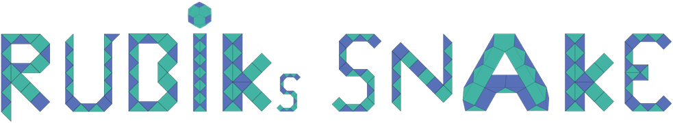

Willkommen auf der RUBIK's SNAKE Fanseite!
RUBIK's SNAKE ist ein ultimatives Spielgerät das man nur schwer aus der Hand legen kann. Einmal angefangen ergeben sich schier unendlich viele Möglichkeiten.
Wer RUBIK's SNAKE noch nicht kennen sollte, kann dazu einen ersten Eindruck auf der offiziellen Seite von RUBIK's bekommen (manchmal auch als RUBIK's TWIST bezeichnet).
RUBIK's SNAKEAuf unserer Fanseite sind viele Figuren und Formen zu finden, die in verschiedenen Kategorien sortiert sind. Für die einheitliche Beschreibung haben wir eine Notation entwickelt, anhand derer sich die notwendigen Drehungen aufschreiben lassen.
Klickt man auf das jeweilige Bild öffnet sich ein 3D-Viewer in dem die Figur beliebig gedreht werden kann.
Besonders schön ist es die Freude an der RUBIK's SNAKE mit vielen anderen weltweit zu teilen. Wer möchte kann uns neue Figuren und Formen gerne zuschicken, am besten in unserer Notation oder als Bild.
th...@wo...deZudem lassen sich in dem integrierten "Player" die Drehungen und entstehenden Figuren und Formen selbst austesten.